Into the Deep
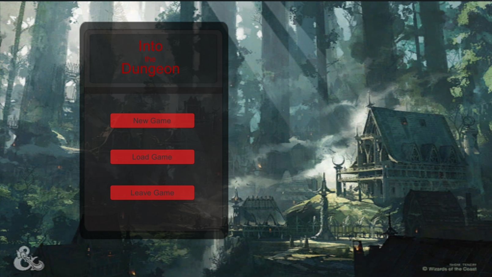Into the Deep (unoffically named) is a yet another hard-rouge-like dungeon crawler made within the Unity Game Engine. I started this project during my studies in University and has been slowly been expanded on. Despite this still being a work in devlopment for almost 2 years, the main architecture of the game is almost at its completion. Following the development of the 40+ milestone game currently resides in my personal notes and captures. Feel free to reach out if you're ever interested! But what is this overly-scoped game that I just can't give up on?
Overview
Into the Deep is a rougue-like dungeon crawling rpg that was initially inspired from many of my favorite games in the industry-most notably 'Darkest Dungeon'. The game consists of numerous systems and architecture a rogue-like this should offer such as:
- Procedurally generated dungeons, including dungeon layouts and events
- Randomly generated Combat Rooms that are populated with unique interactable combat tile types and assets
- Turn-based combat against varying enemy types and AI patterns that each hold unique skills
- Inventory system hosting too many consumable items, armor and weapon sets
- Progression system through a in-game town the player game restock at
- Save System
Goal
The main focus of the game revolves around the 'Dungeon' which can be thought of as a single entity containing multiple 'Dungeon Layers' that becomes progressively harder to clear by encountering more difficult enemies and events within.
The players goal within the game is to clear each layer within the dungeon, while not only encountering (potentionally) difficult event decisions and an endless hoard of monsters, but the back and forth battle with the 'Dungeon Meter' that gives the state of the Dungeons current level of severity.
If the player manages to clear all layers and the dungeon meter they'll be presented with a victory screen. Likewise, each failed run will compound through injuries, progressive refilling of the dungoen layers and the meter. A back and forth battle - the player against the Dungeon.
The Dungeon
The games dungeon uses procedural generation to create its layout and event system - to which everything is tied to.
The layout uses a simple design, that randomly generated rooms and corridors with varying length bends. Below is an instance of what the player might see on their first dungeon run at the start of the game.
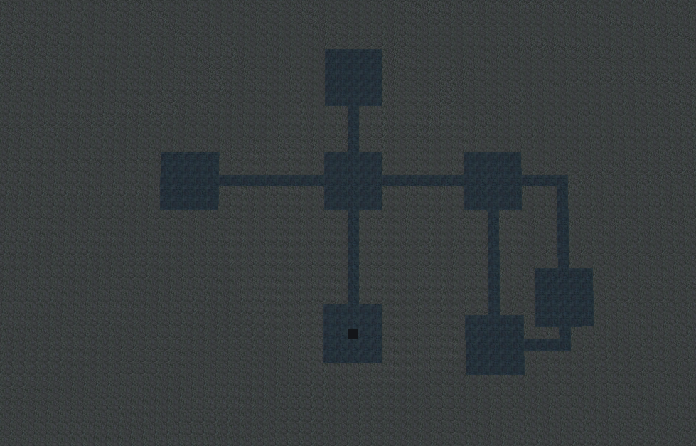These parameters are progressively changed to increase the total number of rooms, corridors, their lengths, and the physical constraints the layout can be generated within. Below are a few dungeons that were created on the 5'th layer of this dungeon.
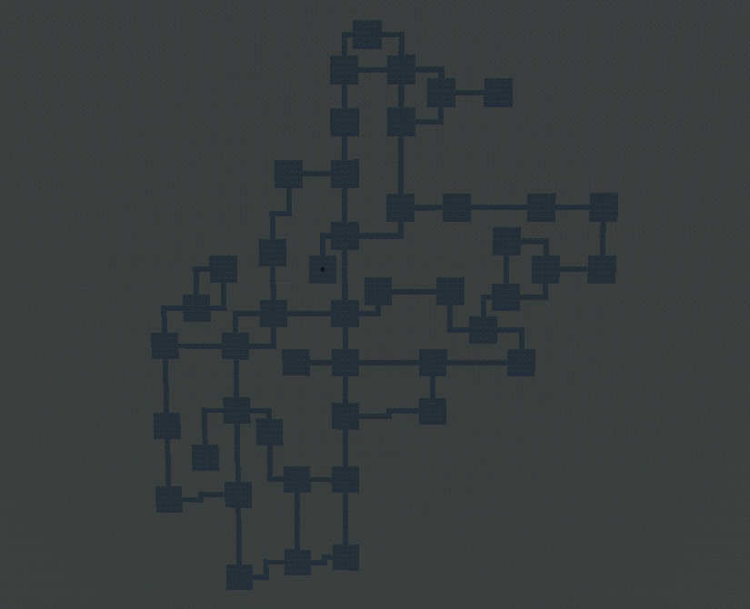You can see the number of rooms and overal space the dungoen can be created within it much greater than the first layer.
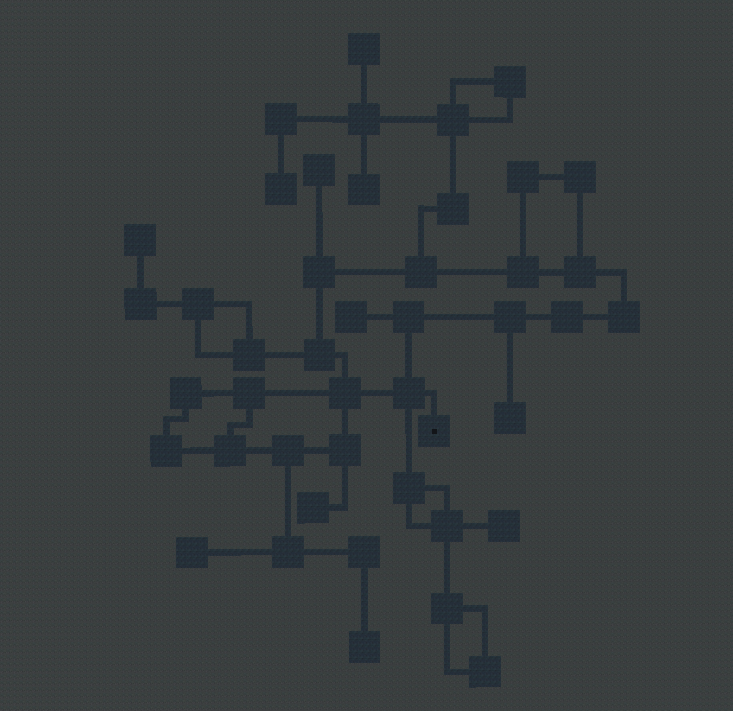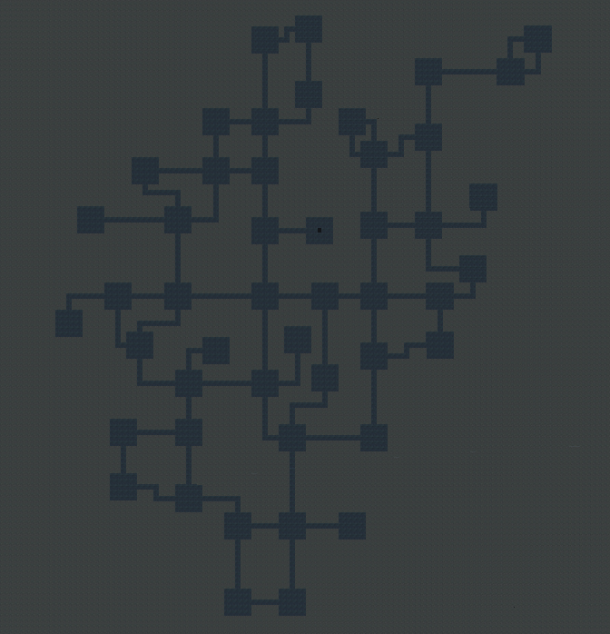
A cool thing when developing games, is the ability to break things. This layout can create a dungeon with 2,000 different rooms with connected corridors, before it begins break the game and processing.
Events
The events are created when each dungoen layout is made, that can either be benefitial, hurtful or a choice for the player to make. Each run is entirely unique with a numerous pool of events to grab from and are ranomly placed in cells throughout the dungoen. Some events can be good to allow the player to heal.
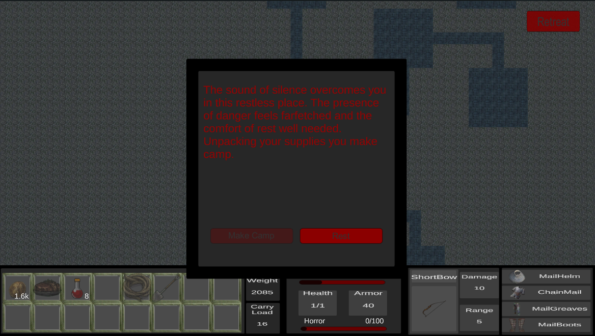While others can lead to a choice for the player to make which can lead to varying consequences
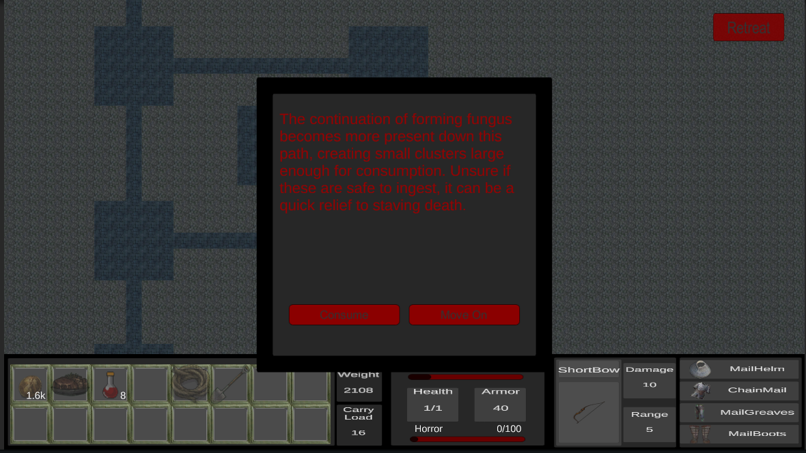In this case the fungi weren't poisonous!
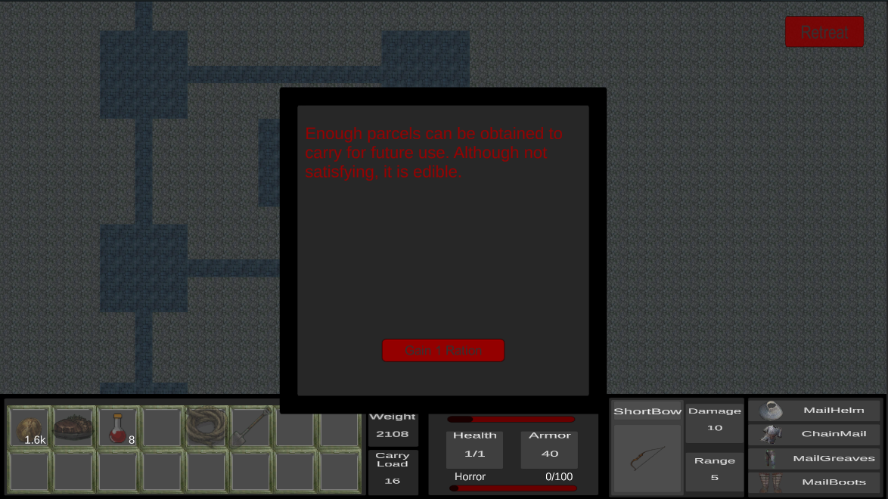Layers
The Dungeon is broken down into multiple layers, in this case there are 5 that alter the gernation of the dungoen, making it harder to clear with more selective events and enemies to be encountered. Each layer can only be progressed to if the previous layer enemy pool threshold is met.
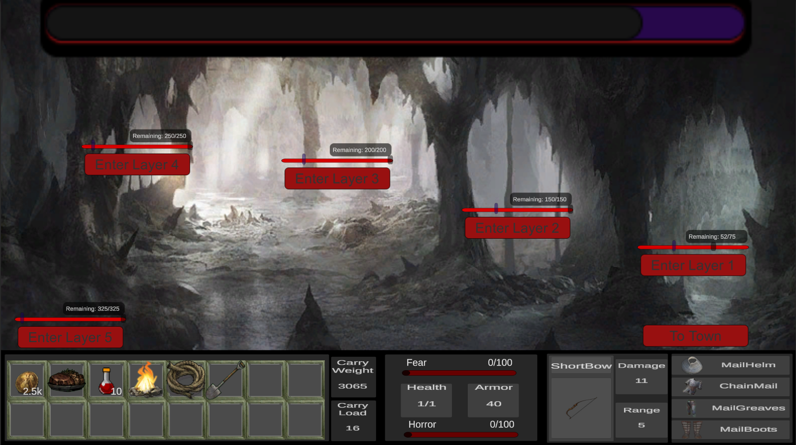Combat
Combat can be initaited when the player crosses certain events in the dungeon. Here the game utilizes randomly generated comabt rooms holding various enemy types and mini-bosses. The player can use any skills they've learned or aquired and boil down to line attacks, sweeps, AOE's and direct attacks within this turn-order system. The combat system references many features from classic table-top games allowing for unique encounters each time.
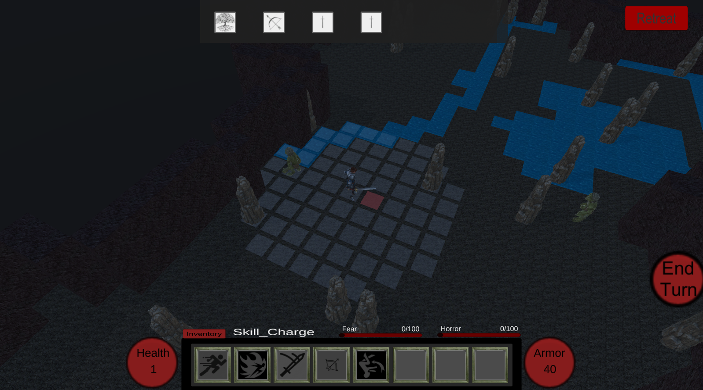As seen above, the game uses only Unity Assets, which is planned to be replaced in the near future.
Progression
Into the Dungeon allows the player to upgrade their skills, buy new equipment and armor when restocking at the town after each run. Although this is section is currently in development, we can see one of the shops below.
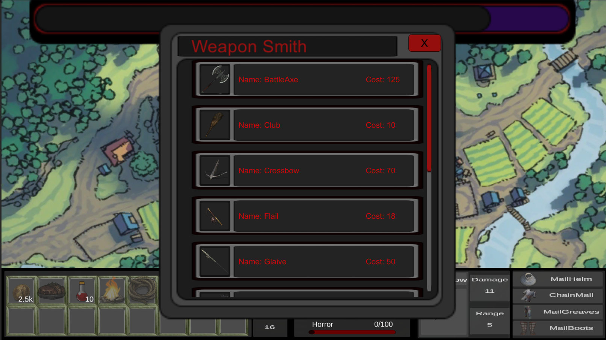Remember when I said 'Hard rogue-like'. Into the Dungeon uses perma death if the player is to ever die within the game. Although this isn't hard to do - there are a few protective measure such as a behind the scenes roll with progressively worse odds the more times the player gets 'knocked down' in the dungoen. On a failed they're game will end and their saved game will be wiped, while on a success an injury will be applied leaving long lasting effects throughout the game.
If you have any question or want to know more about the development, you can see my source code here or shoot me a message where I can provide what milestones have been completed and what's to come in the near future!
- Projects